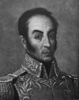

Günümüzde tam altı ülke, Güney Amerikalı devrimci Simon Bolivar’ı (1783-1830) kendi kurucusu kabul etmektedir. Bu sayı Bolivar’ın bir savaşçı olarak ulaştığı başarıyı, ama bir politikacı olarak ne kadar başarısız olduğunu göstermektedir. Gerçekten de kıtadaki İspanyol güçlerine önemli bir darbe vurmuştu. Ancak nihai amacı olan birleşik bir Güney Amerika kurma hedefine ulaşamadan hayata veda etti.

Bolivar Venezuala’daki Caracas şehrinde zengin bir ailenin çocuğu olarak dünyaya geldi. Aile madencilikle uğraşıyordu. Bolivar eğitimini İspanya’da aldı. İspanya 19. yy’ın başında Güney Amerika ve Karayipler’deki emperyal başarılarına her geçen gün bir yenisini ekliyordu.
Ancak Napolyon Savaşları İspanya’nın büyük ölçüde zayıf düşmesine neden oldu. Ülke sömürgelerdeki kolonilerini eskisi gibi koruyamayacak bir duruma düşmüştü. 1807 yılında Venezuela’ya dönen Bolivar gelişmekte olan direniş hareketine katıldı. 1813 yılında Venezuela’yı özgürleştirmek için bir mücadele başlattı. Bu dönemdeki başarısı nedeniyle kendisine “Kurtarıcı” adı verildi.
George Washington ve Amerikan Devrimi hayranı olan Bolivar, ABD’yi model alan birleşik bir Güney Amerika Cumhuriyeti kurmayı hayal ediyordu. Elde ettiği askeri başarılarla Kolombiya (1819), Panama (1819), Peru (1821), Ekvator (1822) ve Bolivya’yı (1825) esaretten kurtardı. 1821 yılında kıta çapında bir konfederasyon olacağına inandığı Gran Colombiya’yı kurdu.
Ne var ki Gran Colombiya Bolivar’ın istediği şekilde gelişmedi. Federasyon kendi içinde derin ayrılıklara sahipti ve 1828 yılında ortak bir anayasa oluşturulması konusunda uzlaşma sağlanamadı. İdealist düşüncelerine ve demokrasiye olan inancına rağmen Bolivar işleyen bir ülke yaratabilmek için kendisini diktatör ilan etti. Buna karşılık planı geri tepti ve bir zamanlar Güney Amerika’nın en çok sevilen adamı olan Bolivar bir anda çok sayıda düşman kazandı. 1828 yılında bir suikast girişiminden sağ kurtulmayı başardı, ancak 1830 yılında görevlerini bırakmak zorunda kaldı.
Tüberküloz nedeniyle sağlığı bozulan Bolivar, Avrupa ya da Karayipler’e sürgüne gitmeyi planladı. Güney Amerika’dan ayrılamadan Kolombiya’daki küçük bir çiftlikte öldü. Öldüğü sırada kırk yedi yaşındaydı.
Ek Bilgiler
1- Bolivar gibi bir ülkeye adını veren başka kişiler de vardır: İspanya Kralı 2. Philip (1527-1598) Filipinler’e, kaşif Kristof Kolomp (1451-1506) Kolombiya’ya ve bir İtalyan haritacı olan Amerigo Vespucci (1454-1512) yeni keşfedilen Amerika kıtasına adını vermiştir.
2- Nobel ödüllü Kolombiyalı yazar Gabriel García Márquez (1927–), Bolivar’ın son birkaç ayının kurgusal öyküsünü yazmıştır: “The General in His Labyrinth” (Labirentinde Bir General / 1989). Kitap, generali kadın düşkünü ve kararsız gösterdiği için Latin Amerika’da tartışmaya yol açmıştır.
3- Bolivar, Avrupa’dan Venezuala’ya dönerken 1807 yılında ABD’yi ziyaret etmiştir. Missouri ve Batı Virjinya’daki Bolivar kasabaları adlarını ondan almaktadır.